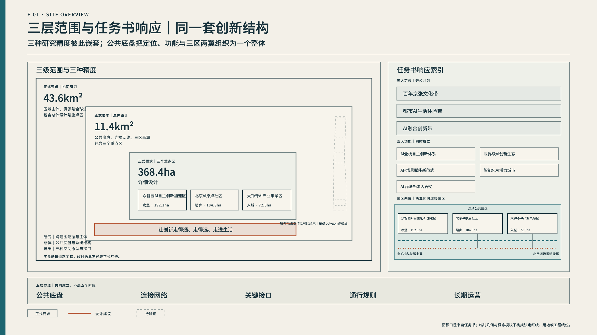
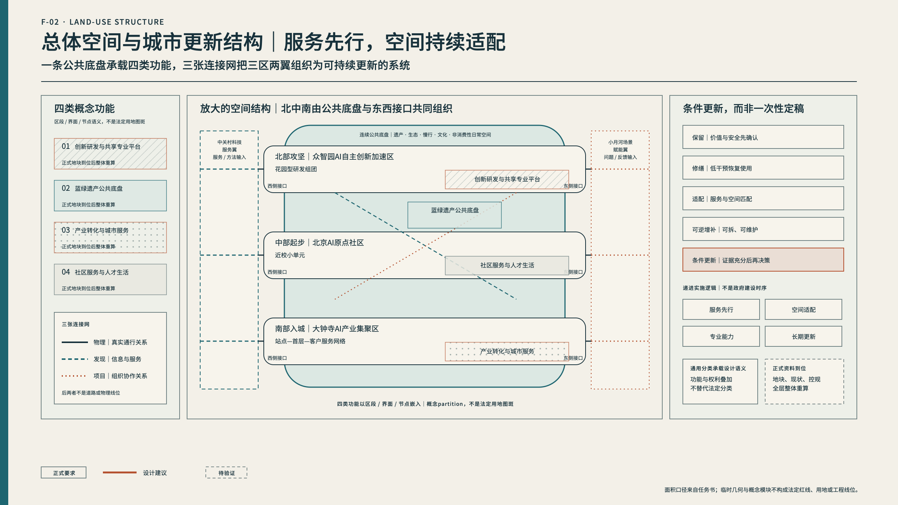
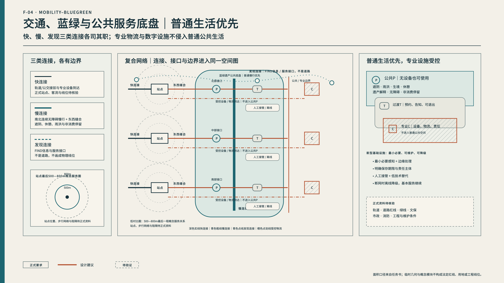
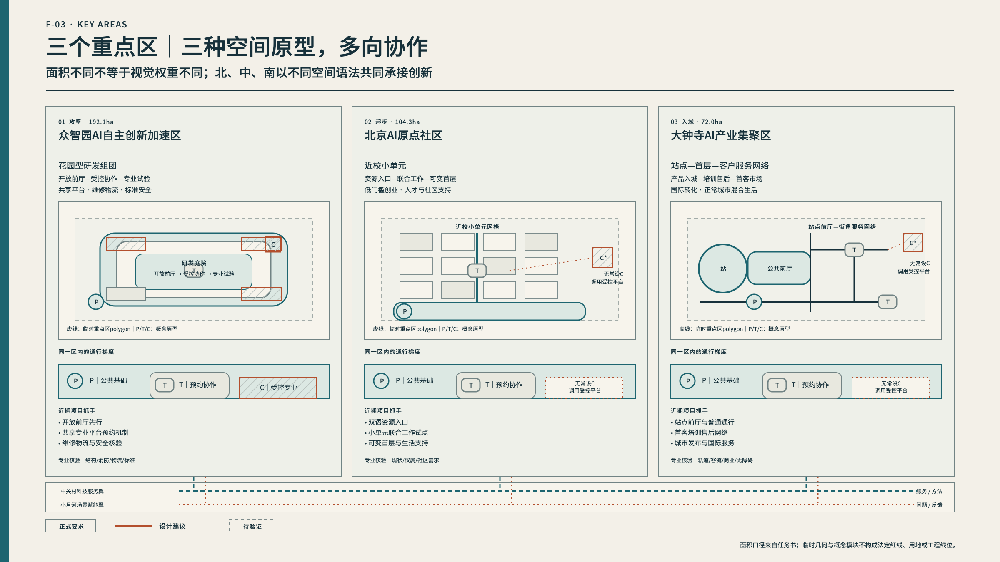
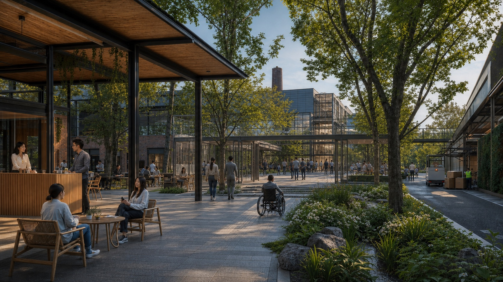
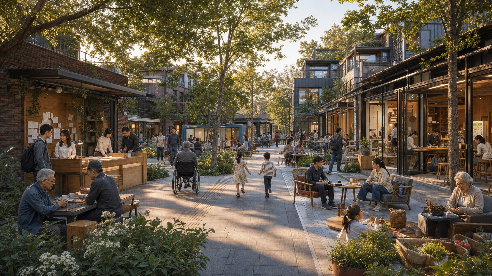
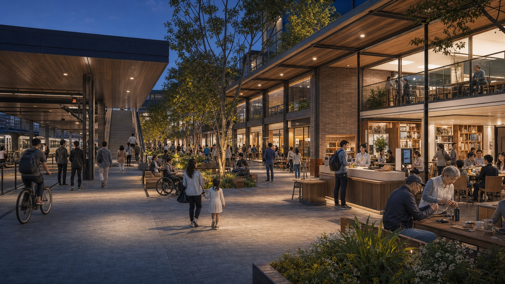
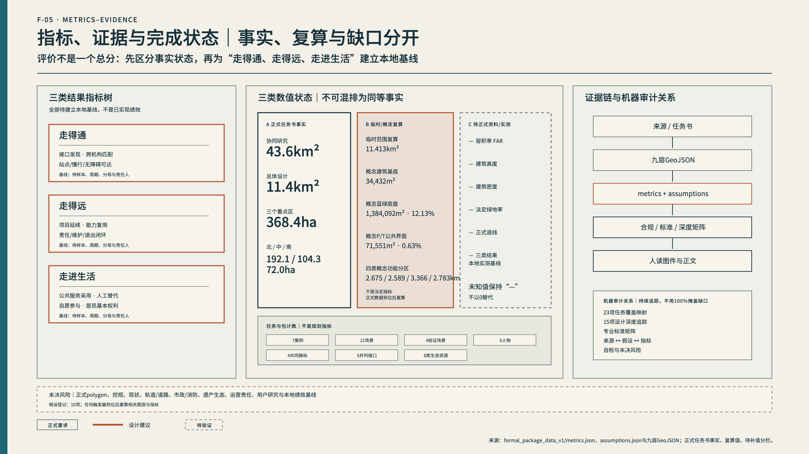

走得通
资源与伙伴跨机构、跨片区找到彼此。
以公共生活为底盘，让创新走得通、走得远、走进生活。
三类结果、五类接口与公共／过渡／专业通行规则共同成立，不构成单向流程。
资源与伙伴跨机构、跨片区找到彼此。
项目留下可复用能力、责任与长期关系。
创新改善真实服务，同时保留选择与人工替代。
本页显式覆盖检查器要求的全部可见锚点。
总览地图、三层范围、重点区域、用地分区、交通慢行、蓝绿公共空间、建筑、更新项目。
AI 场景、核心指标、任务覆盖均可回指机器文件。
自检状态、来源、假设保持显式可见。
任务书公布面积是正式事实；当前polygon为临时几何，不替代法定边界。

用地、交通慢行、蓝绿公共空间、建筑与更新项目、AI场景节点分层审计。


攻坚、起步、入城是等权、可多向往返的三种空间原型。




AI辅助概念表达：非现场照片、现状证据或法定规划，不对应精确建筑设计或实施承诺。
事实、临时复算、概念建议、资料缺口与待建基线保持分离。

任务书与Agent必答条目均映射至正文、图件、几何、指标、来源、假设和检查。
SITE-PACKAGE / SOURCE-REGISTRY / PROCESSED-FACT-PACK / BOUNDARY-SOURCE / KEY-AREA-SOURCE / OFFICIAL-ANNOUNCEMENT控规、权属、交通、市政、遗产生态、运营、用户与基线仍需补证。
A-BOUNDARY-001 / A-CONTROLS-002 / A-EXISTING-003 / A-TRANSPORT-004 / A-MUNICIPAL-005